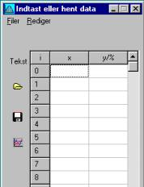
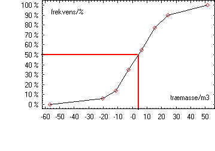
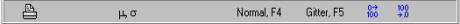
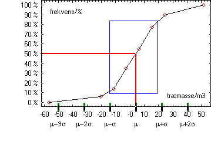
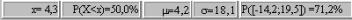
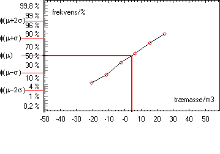
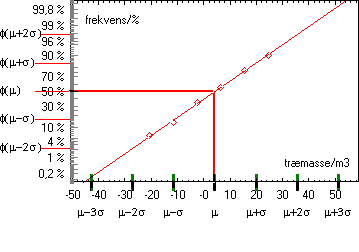

Denne simulation kan benyttes til at undersøge om et givet datasæt er normalfordelt. Når simulationen vælges fås derfor en tabel, hvor man kan indtaste sine data eller hente data.
|
 |
Betydningen af ikonerne i panelet til venstre i tabellen
er:
Tekst: overskrifterne x og y/% kan redigeres. Åben: et datasæt hentes. Gem: datasættet gemmes. Graf: grafen tegnes. |
De tilsvarende funktioner kan også vælges i menuen, Filer…
En typisk opgave kan være følgende (vejledende eksamensopgave 6.033):
| Mertilvækst / m3/ha | frekvens /% |
| ]-56,5; -20,5] | 6 |
| ]-20,5; -11,5] | 8 |
| ] -11,5; -2,5] | 21 |
| ] -2,5; 6,5] | 20 |
| ] 6,5; 15,5] | 22 |
| ]15,5; 24,5] | 13 |
| ]24,5; 51,5] | 10 |
Her indtastes intervallernes højre endepunkter i første søjle i tabellen. De kumulerede frekvenser beregnes og indtastes i anden søjle i tabellen.
Da der ikke er værdier før første intervals venstre endepunkt, er den kumulerede frekvens 0% i dette punkt. Den kumulerede frekvens er 100% i sidste intervals højre endepunkt. Man indtaster derfor følgende data i tabellen:
| Mertilvækst / m3/ha | Frekvens /% |
| -56,5 | 0 |
| -20,5 | 6 |
| -11,5 | 14 |
| … | … |
| 51,5 | 100 |
Man kan nøjes med at indtaste to punkter (x1, y1) og (x2, y2). Det har man brug for i normalfordelingen, men så kan middeltal for sumkurven ikke beregnes.
Når data er indtastet eller hentet, kan grafen tegnes:

Herefter kan der i panelet foroven vælges forskellige visninger:

Middelværdi og spredning, normalfordeling, indtegning af gitter og valg af decimaler. Desuden kan områder markeres med musen og sandsynligheden for intervallet P(x1,x2) beregnes automatisk og skrives i statuspanelet.

Her er indtegnet middelværdi og spredning.

Ved valg af normalfordeling fås en graf som vist herunder:

Bemærk, at punkterne (x, 0%) og (x, 100%) ikke medtages!
Vælges middelværdi og spredning indtegnes automatisk den bedste rette linie. Samtidigt skaleres x-aksen, så kumulerede sandsynligheder kan aflæses for alle sandsynligheder fra 0,1% til 99,9% vha. scrollbaren til venstre.

Markeres et område med musen beregnes sandsynligheden for intervallet vha. den indtegnede bedste rette linie. Ved beregning af middelværdi og spredning (og indtegning af linie) kan man medtage alle de afsatte punkter eller kun nogle af punkterne.
Lommeregneres aktiveres ved at vælge Vis »Regner«. Datafelterne Middelværdi og Spredning i lommeregneren opdateres automatisk, men felterne kan også udfyldes manuelt. Dette muliggør beregning af sandsynligheden P(X<x) eller af det tal, x, hvor P(X<x) = en indtastet procent.